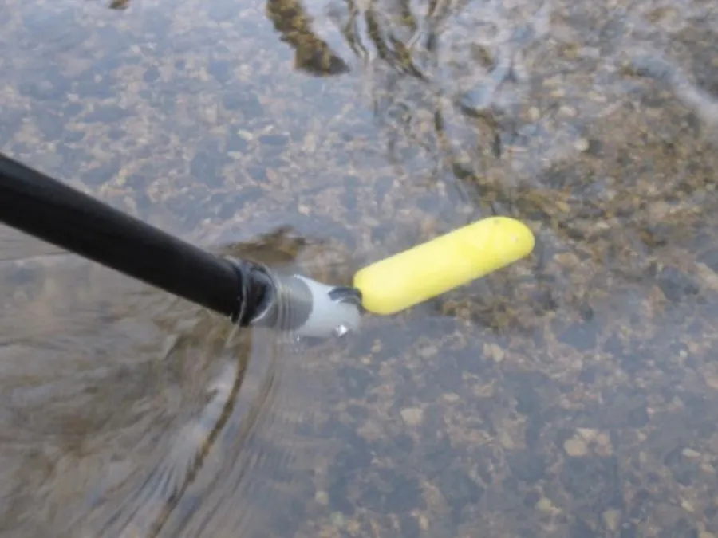

Débitmètres · Mesure ponctuelle
FloStickCourantomètre électromagnétique compact
Sonde, perche et afficheur dans un seul appareil : la vitesse d’écoulement en quelques secondes, sans paramétrage. L’outil idéal pour contrôler sur place un débitmètre hauteur-vitesse ou explorer les vitesses d’un conduit.
- Vitesse
- Étalonné de 0 à 2 m/s
- Précision
- ± 2 % (± 1 % en option)
- Autonomie
- 30 h au minimum
- Poids
- 1,4 kg, flottant
Idéal pour
- Contrôle de débitmètres
- Assainissement
- Canaux d’irrigation
- Petits cours d’eau
- Mesures rapides
LeasingDisponible à l’achat ou en leasing, par mensualités. Comment ça marche
Points forts
La mesure de vitesse la plus directe : on plonge, on lit.
- Tout-en-unSonde, perche en fibre de carbone et afficheur dans un même ensemble.
- Aucun réglageMesure précise en quelques secondes, sans paramétrage.
- Peu d’eauPetite sonde, adaptée aux faibles hauteurs.
- Lisible en plein soleilÉcran rétroéclairé et molette de navigation étanche, utilisable avec des gants.
- 2 000 mesures horodatées14 000 en option, en manuel ou en automatique.
- Il flotteL’appareil remonte à la surface s’il tombe à l’eau.
Principe de mesure
Comme le FLUVIA, le FloStick mesure la vitesse par la loi de Faraday : l’eau traverse le champ magnétique de la sonde et crée une tension proportionnelle à sa vitesse.
Sans pièce mobile, la sonde ne retient pas les déchets. La moyenne de lecture se choisit entre 2 et 60 secondes ; la mesure peut aller au-delà de la gamme étalonnée, jusqu’à 6 m/s.
- Indication des vitesses négatives
- Moyenne sur 2, 5, 10, 30 ou 60 s
- Mesure possible jusqu’à 6 m/s
Applications
Pour les mesures de vitesse ponctuelles, avec peu d’eau.
- Contrôle de débitmètres hauteur-vitesseVérification sur place d’une mesure de vitesse en réseau.
- Réseaux d’assainissementExploration des vitesses dans un conduit.
- Canaux d’irrigationMesures rapides sur canaux ouverts.
- Petits cours d’eauJaugeage simple en canal ouvert.
Caractéristiques
Appareil complet, livré avec sacoche et chargeur.
| Méthode | Électromagnétique, loi de Faraday |
|---|---|
| Gamme étalonnée | 0 à 2 m/s en standard, 0 à 3 m/s en option |
| Au-delà | Mesure possible jusqu’à 6 m/s, vitesses négatives indiquées |
| Précision | ± 2 % ± stabilité du zéro ; ± 1 % en option |
| Moyenne | 2, 5, 10, 30 ou 60 s |
| Enregistrement | 2 000 points horodatés, 14 000 en option |
| Boîtier | Polyamide, IP67 |
|---|---|
| Perche | Fibre de carbone, environ 900 mm |
| Sonde | Époxy et inox, électrodes en titane, 20 × 30 × 100 mm |
| Affichage | LCD rétroéclairé, lisible en plein soleil |
| Alimentation | Batterie Li-Ion 5 200 mAh, chargeur secteur |
| Autonomie | 30 h en continu au minimum |
| Poids | 1,4 kg |
| Température | − 10 à 50 °C |
Téléchargements
Questions fréquentes
Les questions que nous posent le plus souvent les exploitants et les bureaux d’études.
Faut-il paramétrer le FloStick ?
Non : il mesure la vitesse en quelques secondes, sans réglage.
Peut-on vérifier un débitmètre hauteur-vitesse avec ?
Oui. C’est un usage courant : on compare sur place la vitesse mesurée par le FloStick à celle du débitmètre fixe.
Le FloStick calcule-t-il le débit ?
Il mesure et enregistre la vitesse. Pour un jaugeage complet avec calcul de débit par profils, le FLUVIA est l’appareil adapté.
Que se passe-t-il s’il tombe à l’eau ?
Il flotte : l’ensemble remonte à la surface.